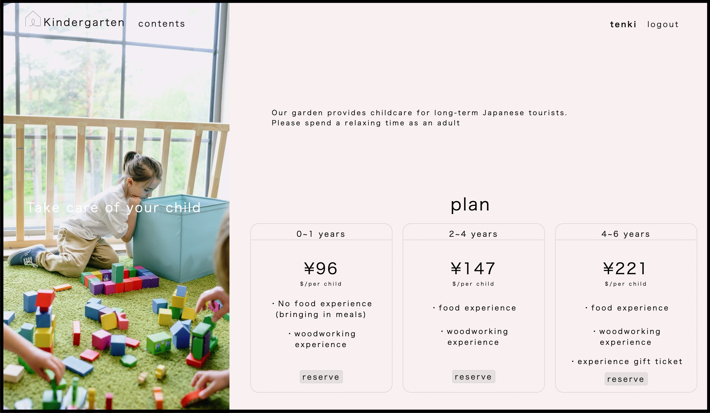

childcare(外国人観光客向け託児サービスの予約サイト）

開発環境
Ruby / Ruby on Rails / MySQL / GitHub / Heroku / Visual Studio Code / Trello
-
概要
制作時間 300時間 URL https://childcare-japan2022.herokuapp.com/ ID admin PASS 2222 -
動作テスト
テスト用アカウント
mail test@tt PASS tenkin12
OUTLINEアプリケーションの概要
オリジナルアプリケーションとして、インバウンド向け一時託児サービスの予約サイトを開発しました。
「北海道で保育園留学を行なっている、とある保育園」をモデルとしております。
主な機能は、ユーザー登録機能、カレンダー機能（実装予定）、予約申込機能です。
トップページにアクセスすると、３つの託児プランについて表示され、それをクリックすると、各託児プランにおける詳細を閲覧することができます。
ユーザー登録をすると、ご希望の託児プランに対して予約申込をすることができます。
また、予約数に応じて受付をストップするカレンダー機能を実装予定です。
-
開発に至った経緯
1番の理由は、貴社のスタッフの一員になれたとしたら、どんな風に貢献できるのか？を具体的に掲示する為です。(志望本気度のアピールです)
なぜ、インバンド向けの託児サービス予約サイトなのか？に関しては、これまでに行なったインターンや地方創生セミナーなどで、インバンドの方々が一時利用できるような託児所が不足している現状を知り、解決したいと思った事。そして円安の影響もあり、大きく需要が見込めると考えたからです。
そこで、スクールの最終課題であるフリマアプリの仕組みを参考に、当オリジナルアプリケーションを作成致しました。
-
開発で工夫したこと
※前提として、貴社の既存事業に乗っかる形で親和性の高い事業となるように意識しました。
一つ目は、フロントデザインです。ユーザーがサイトを閲覧した時に、一発で「託児サービス」だと認識できるように写真選びやタイトルを考えました。 そして、淡い暖色を背景色にする事で、託児サービスの要である”安心感”を演出できるのでは？と考え、見やすさを考慮しながら、背景色を調整した事です。
二つ目は、子供の年齢に応じて、最適なプランを用意した事です。例えば、飲食物が限られる繊細な0~1歳児向けには、 食べ物持ち込み（食体験外し）プランを設け、木工体験も年齢によって難易度の異なる作品を用意しております。
-
今後実装したいと思っていること

gemのsimple calenderを用いて、カレンダー機能を設けたいと考えています。(一日に予約できる組数制限)
理由は、予約を受け付ける運営側の負担軽減の為です。現状、予約可否によって◯と✖️を表示できるものの、過去の日付にもまたがって◯が表示される為、 調整中です。